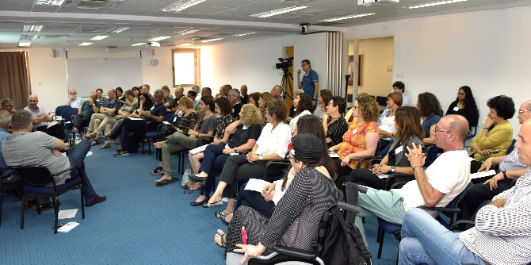

On Monday, August 6, 2018, the Mandel Graduate Unit held an evening event in honor of its faculty member and Israel Prize laureate Professor Chaim Adler, in recognition of his work in education. The event celebrated both the publication of his autobiography, Memories and Insights, and his 90th birthday. Tens of graduates of the Mandel School for Educational Leadership attended the event and expressed their heartfelt appreciation for Professor Adler's significant contribution to their professional paths and accomplishments.

The event focused on Professor Adler’s work over many years. A number of Mandel graduates demonstrated the impact of Professor Adler's work by presenting different perspectives on educational and social issues in the context of their own professional efforts and discussing his influence on their work.
-
Mordechay Cohen, director general of the Ministry of the Interior and a graduate of Cohort 8 of the Mandel School for Educational Leadership, spoke about the advancement of Israel’s periphery.
-
Dr. Hassan Agbaria, the Israeli Ministry of Education's superintendent of elementary schools in the Haifa District and a graduate of Cohort 8 of the Mandel School, presented the formal education system as a major and important arena of influence for social change, particularly in Arab society.
-
Menachem (Mendi) Rabinovitz, head of the Beit Biram High School of the Hebrew Reali School in Haifa and a graduate of Cohort 10, shared his thoughts on whether politics or education is the most effective arena of influence.
-
Dr. Sara Shadmi-Wortman, a graduate of Cohort 4 and the chair of CAM – Community Aspiration Management and Leadership at the SHDEMOT Center at the Oranim Academic College of Education, presented dilemmas arising from the encounter between academia and social activism.
-
Gidi Tzur, a graduate of Cohort 5 and the CEO and founder of Kivunim – Promoting Youth with Special Needs), spoke about the links – in theory and in practice – between informal education and the therapeutic field.
-
Dr. Granit Almog-Bareket, director of the Mandel Graduate Unit and a graduate of Cohort 14, spoke about the Graduate Unit's partnership model.
The first part of the evening was brought to a close with remarks from
Professor Ami Volansky, a faculty member of the Mandel School for Educational Leadership, and Professor Chaim Adler himself.

The second part of the event consisted of an activity designed to promote familiarity and networking among the graduates and to enable them to share educational and social questions with each another. The event was led by
Dr. Granit Almog-Bareket, director of the Mandel Graduate Unit, and by
Ayala Bavly, editing manager of the Mandel Graduate Unit.
{kind=link}